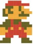

<!DOCTYPE html>
<html lang="en">

<head>
  <meta charset="UTF-8">
  <meta name="viewport" content="width=device-width, initial-scale=1.0">
  <title>My 8bit-Clock</title>

  <!-- 我的CSS -->
  <link rel="stylesheet" href="./CSS/clock.css">
  <link rel="stylesheet" href="./CSS/upStone.css">
  <link rel="stylesheet" href="./CSS/reference.css">
  <link rel="stylesheet" href="./CSS/number.css">
  <link rel="stylesheet" href="./CSS/downStone.css">
  <link rel="stylesheet" href="./CSS/mario.css">
  <link rel="stylesheet" href="./CSS/animation.css">
  <link rel="stylesheet" href="./CSS/btn.css">
</head>


<body>

  <div id="content">

    <!-- 背景 -->
    <div id="background_content"></div>

    <div id="clock" class="">
      <!--  -->
      <table id="table_clock"></table> <!-- 底色 -->
      <table id="hourHand"></table> <!-- 時針 -->
      <table id="minuteHand"></table> <!-- 分針 -->
      <div id="secondHand"></div> <!-- 秒針 -->
    </div>

    <!-- <div id="test">
      對時鐘照格數用
      <div id="div01">
    <table id="table01"></table>
    </div>


      對照馬力歐格子用
      <div id="div_m">
      <table id="table_m"></table>
    </div>
    </div> -->


    <!-- 馬力歐 -->
    <div id="position_mario">
      <div id="mario">
        <!--  -->
        <table id="table_mario" class="mario "></table>
      </div>

      <div id="mario_back">
        <!-- 對照用 -->
        <div id="bad"></div>
        <table id="table_mario_back" class="mario "></table>
      </div>
    </div>


    <!--  壞香菇-->
    <div id="bad_mushroom_content" class="bad_mushroom_move ">
      <!--  -->
      <!--  -->
    </div>

    <!-- 水管 -->
    <div id="pipe_content"></div>
    <!--  -->


    <!-- 地上石頭 -->
    <div id="stone_content"></div>

    <!-- 天上石頭 -->
    <div id="upStone_content"></div>
    <!--  -->

    <!-- 數字時鐘 -->
    <div id="time_content">
      <div id="time">
        <div id="ones_second_content"></div>
        <div id="tens_second_content"></div>
        <div id="ones_min_content"></div>
        <div id="tens_min_content"></div>
        <div id="ones_hour_content"></div>
        <div id="tens_hour_content"></div>
        <div id="colon_content"></div>
      </div>
    </div>

    <!-- 按鈕 -->
    <!-- <div id="btn_content">
      <label for="up" id="label_up"></label>
      <label for="down" id="label_down"></label>
      <input type="radio" id="up" name="marioBtn" checked>
      <input type="radio" id="down" name="marioBtn">
    </div> -->


    <script src="./JS/creat.js"></script>
    <script src="./JS/change.js"></script>
    <script>
      // 改td顏色
      //       const aaa = document.querySelectorAll(`
      //       .tr_eight_1 .td_eight_1,
      //       .tr_eight_1 .td_eight_2,
      //       .tr_eight_1 .td_eight_3,
      //       .tr_eight_1 .td_eight_4,
      //       .tr_eight_2 .td_eight_1,
      //       .tr_eight_2 .td_eight_4,
      //       .tr_eight_3 .td_eight_1,
      //       .tr_eight_3 .td_eight_2,
      //       .tr_eight_3 .td_eight_3,
      //       .tr_eight_3 .td_eight_4,
      //       .tr_eight_4 .td_eight_1,
      //       .tr_eight_4 .td_eight_4,
      //       .tr_eight_5 .td_eight_1,
      //       .tr_eight_5 .td_eight_2,
      //       .tr_eight_5 .td_eight_3,
      //       .tr_eight_5 .td_eight_4
      // `)
      //       for (const el of aaa) {
      //         el.style.background = 'blue'
      //       }

    </script>
</body>

</html>